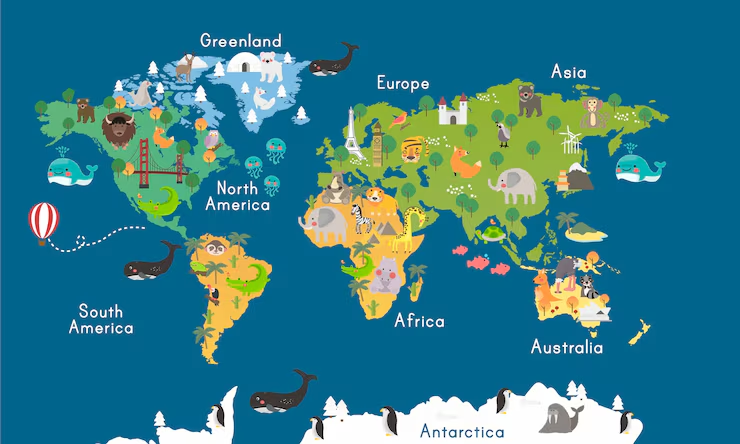

Your fun animal encyclopedia for kids!
Loading animals…
No animals found — try a different name!
⭐ Fun Fact
💡 Did You Know?
🌍 Where They Live
🍽️ What They Eat
📏 How Big They Are
⏳ How Long They Live
🌎 How Many in the World
🛡️ Extinction Risk
Share a real animal with fun facts! We'll do a quick check first, then an admin will make sure it's appropriate, true, and really about animals before it goes live.
Update this animal's facts. Changes save on this device.
Thanks for sharing! Your animal passed our quick checks and was sent for admin review. An admin will make sure the facts are true before it appears in the encyclopedia.

Tell us what you think about Wild Wonders! Your ideas help make the site better.
Something broken or acting weird? Tell us what happened so we can fix it.
Check each animal for appropriate language, true facts, and animal topics. Approve good ones, edit any animal, or reject ones that don't fit.
Enter the admin password to unlock review.
Search any animal and update its name, emoji, or facts.